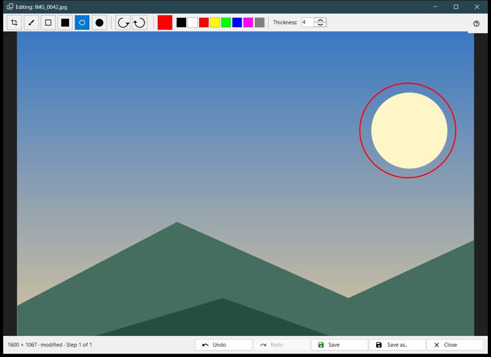
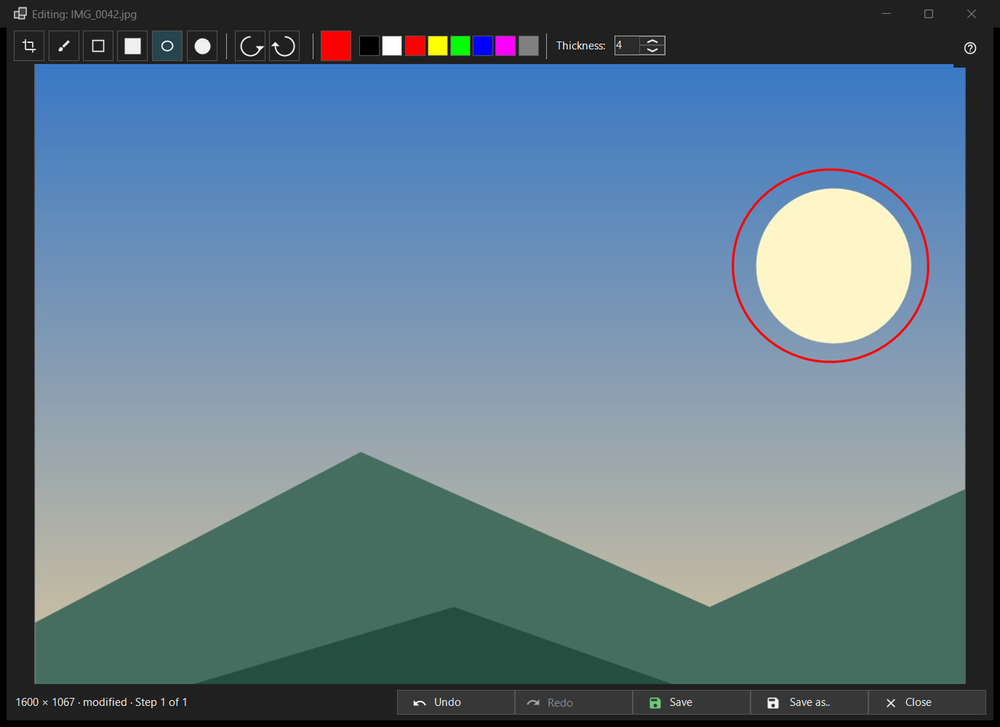

Edit image
What this is for
A small editor for one still picture: draw shapes, crop, rotate and flip, then save over the original or as a new file. It opens, with the picture's file name in the title, from the Edit button of the toolbar or the first item of the picture menu, and only for a still image (not for an animation). The editor reads the file again and works on its own copy.


In this order
- Press Edit in the viewer.
- Pick a tool, a colour and a thickness.
- Draw on the picture, or crop, rotate or flip it; Undo takes a step back.
- Press Save to write over the original, or Save as.. for a new file.
- Close the window; if there are unsaved changes, answer the question.
The elements
Tools
In the strip: Crop, Brush, Rectangle, Filled rectangle, Ellipse and Filled ellipse. The keys are C, B, R and O (the filled ones have none). Hold Shift while drawing a rectangle or an ellipse to get a square or a circle. Hovering a tool shows its name and key.
Colour and thickness
The colour button opens the colour dialog, and eight quick swatches sit next to it (black, white, red, yellow, lime, blue, magenta, grey). Thickness runs from 1 to 64 image pixels (default 4); the keys [ and ] change it by one. Colour and thickness are shared by all tools.
Crop
With the Crop tool, drag a frame on the picture. The Apply crop button appears only while a frame exists. Enter does the same; Esc removes the frame without cropping. The picture is cut only when you apply it.
Rotate and flip
Rotate left (Ctrl+[) and Rotate right (Ctrl+]) turn the pixels. The keys H and V flip the picture horizontally and vertically. This changes the picture itself, unlike R in the viewer, which turns only the display.
Undo and Redo
Undo (Ctrl+Z) and Redo (Ctrl+Y or Ctrl+Shift+Z) walk the history of up to 20 steps within a memory limit. The status line shows the size and, after a change, modified with Step N of M; when the limit drops the oldest steps it says Old steps were dropped: memory limit.
Save
Save (Ctrl+S) writes over the original and is enabled only after a change; before that its tooltip says Nothing to save: the image has not been changed. For a JPEG you are asked once per session: The JPEG will be re-compressed - that cannot be undone. The capture date and the rest of the EXIF data are kept. The file is written under a temporary name and swapped in; if saving fails the window stays open with the reason.
Save as..
Opens a file dialog with the name (edited) added. The formats are PNG, JPEG, BMP, TIFF and WebP; a picture in any other format is offered as PNG. A temporary folder of an archive is refused. After saving over the original the viewer reloads it; a new file in the same folder is opened; one elsewhere is named in the status line.
When Save is off
The status line says Cannot write over the original with the reason: this format is not written, the file is read-only, there is no write permission, another program is holding the file, the file has several pages or frames (only the first is edited), it is inside an archive, or it is missing. Save as.. stays available.
Closing
Close or Esc closes the window; Esc first cancels a stroke in progress, then removes the crop frame. With unsaved edits the question reads: The edits are not saved - Close the editor and lose the unsaved edits? Save saves first, Don't save discards, Cancel (the default, also Esc) stays. This question is asked even when confirmations are switched off.